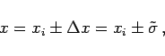
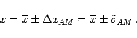
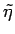
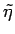

Inhalt Index DeskTop Bronstein

 Wahrscheinlichkeitsrechnung und Mathematische Statistik Theorie der Meßfehler Meßfehler und ihre Verteilung Angabe von Meßergebnissen mit Fehlergrenzen
Wahrscheinlichkeitsrechnung und Mathematische Statistik Theorie der Meßfehler Meßfehler und ihre Verteilung Angabe von Meßergebnissen mit Fehlergrenzen


Die Angabe des Meßergebnisses erfolgt für die Einzelmessung in der Form
|  | (16.218a) |
für den Mittelwert in der Form
|  | (16.218b) |
Dabei wurde für  jeweils die mit Abstand am häufigsten verwendete Standardabweichung eingesetzt. Es können aber auch
jeweils die mit Abstand am häufigsten verwendete Standardabweichung eingesetzt. Es können aber auch  und  benutzt werden.
und  benutzt werden.